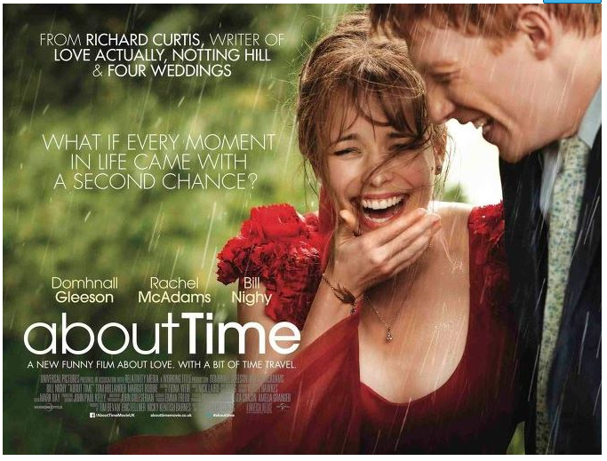

어바웃 타임
바로 시간을 되돌릴 수 있는 능력이 있다는 것이다.
꿈을 위해 런던으로 간 팀은 우여히 만난 사랑스러운 여인 메리에게 첫눈에 반하게 된다.
그녀의 사랑을 얻기 위해 자신의 특별한 능력을 마음껏 발휘하는 팀이 그려진다. 하지만 팀을 둘러싼 주변 상황들은 미묘하게 엇갈리고, 예상치 못한 사건들이 나타나기 시작하는 내용이다.줄거리
바로 시간을 되돌릴 수 있는 능력이 있다는 것이다. 꿈을 위해 런던으로 간 팀은 우여히 만난 사랑스러운 여인 메리에게 첫눈에 반하게 된다. 그녀의 사랑을 얻기 위해 자신의 특별한 능력을 마음껏 발휘하는 팀이 그려진다. 하지만 팀을 둘러싼 주변 상황들은 미묘하게 엇갈리고, 예상치 못한 사건들이 나타나기 시작하는 내용이다.
감독: 리차드 커티스
브릿지 존슨의 일기를 비롯하여 다수의 명작품을 탄생시키기로 유명한 작가이다.
